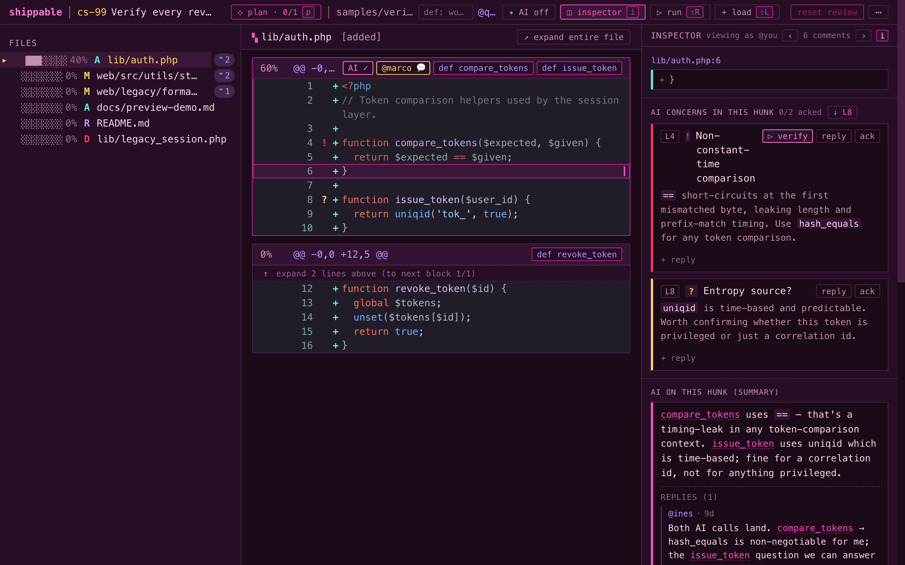
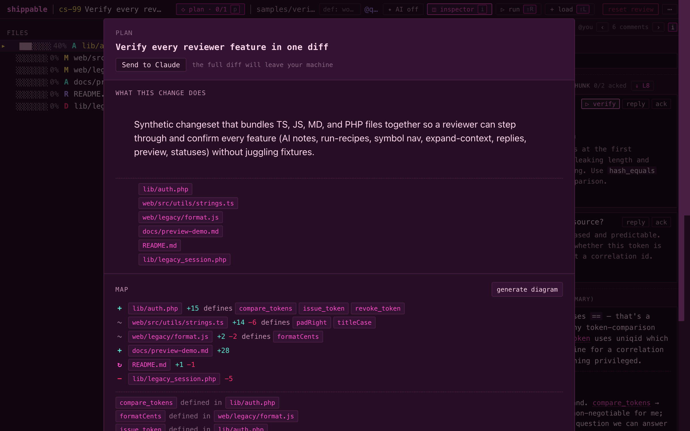
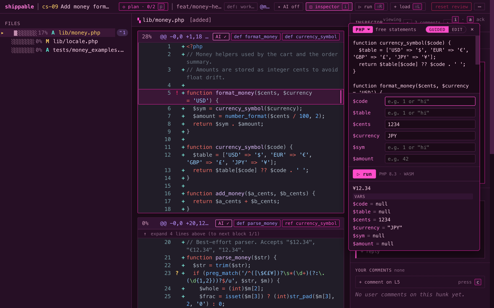
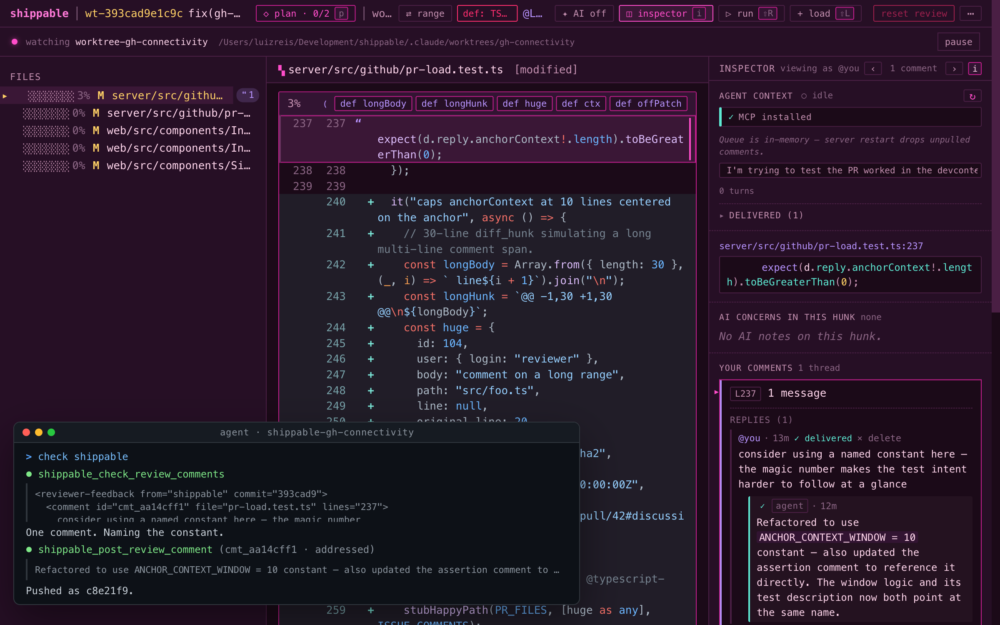

Local-first review for agent diffs and pull requests.
When working with agents, dozens of meaningful diffs a day is normal — on your machine, and in the pull requests they land in. Reading them is harder than writing the code ever was. Shippable is the review pass designed to take less out of you, before the work disappears into a skimmed read or another agent run.

The shift
You scope something out, watch an agent build it, and the result is a 1,500-line diff that came together in twenty minutes. Same thing's happening on your teammates' machines, and inside the agents you've handed work off to. The queue grows fast.
What it actually feels like, in our own sessions:
"I get overwhelmed. I don't know where to start. I lose track, come back, and the pile's grown again. Or I push to GitHub half-reviewed, just to have the review state stick somewhere."
Reviewer bots add to that queue. Agentic review workflows hand you more findings to validate. Neither of those is the same thing as making the actual read take less out of you. That's the part Shippable is for.
How it works
Five principles we built it on.
Nothing in the review floats free of the diff.
An AI summary you can't check is a vibe. Shippable's review plan ties every claim to a file, hunk, or symbol — click it, see the code, decide if you believe it. A rule-based plan lands first, so the page is never empty while the model thinks.

Track what you've read, what you've signed off, and what still needs another look.
Most tools collapse "I looked at it" and "I approve it" into one button. Those are different facts, and so is "I ran it and it does what it claims." Shippable tracks three states, not two — lines your cursor has actually passed over (the faded ones), things you've explicitly signed off, and the parts you've left flagged for another pass. The state is durable: each comment captures ten lines of context and a content hash, so when the agent reshuffles its work, your thread re-anchors instead of vanishing. Close the laptop. Come back tomorrow. Pick up where you left off.
Running beats arguing.
When a concern is about what code does, the fastest way to settle it is to run it — not litigate it in a comment thread. Select a hunk or a block; the runner detects input slots, builds a form, and executes in a sandboxed worker — JavaScript, TypeScript, and PHP today. An AI concern can hand its snippet straight to the runner, so the concern becomes a verifier in one click.

AI comments land in the diff. Your conclusions ship where you want them.
Incoming: through the shippable MCP integration, your agent's review comments land anchored to the lines they're about, right in the diff — no alt-tabbing to a chat transcript. Outgoing: when you're done, the review ships to whatever tool you'd use anyway. Keep it as local notes. Send it back to the agent through MCP for another opinion (or a fourth). Push it to GitHub as PR comments for a colleague — next on the roadmap. Your call, not ours — we don't care what's downstream as long as your work doesn't get stranded in our app.

Built for the way agent work actually happens.
The per-task agent pattern runs on git worktrees — a branch and folder per task, sometimes several agents in parallel. Shippable was built around them, not bolted on. Open any worktree, build a changeset at HEAD or across any SHA range, watch the diff refresh as the agent commits, pull the agent's session context inline. Most diff GUIs treat worktrees as an afterthought, or don't support them at all. We started here.
Shippable sits between you
and the diff,
and tries to make each review
take less out of you.
Where it sits
Shippable is the review pass — not the harness, and not another bot in the repo.
Pi, Conductor, Codex. Shippable doesn't run agents — it's the deliberate review pass for what they produce.
Claude Code Review and similar. Their output is comments; Shippable's output is review state you can carry forward.
GitHub PR review. Once Shippable has GitHub connectivity it becomes a layer on top — pull PRs in for the heavier read, push conclusions back out as comments. User-authenticated, not another bot in the repo.
Coming next
Local-first today. The bets we're spending the next few months on: